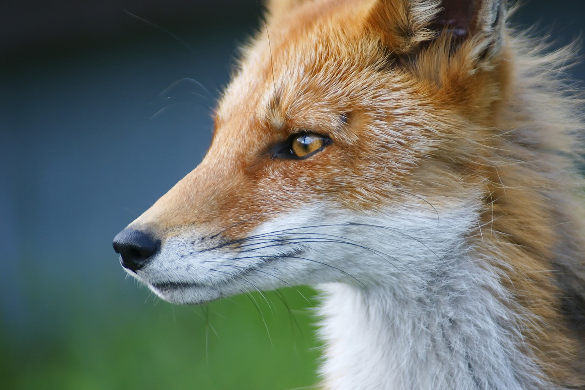
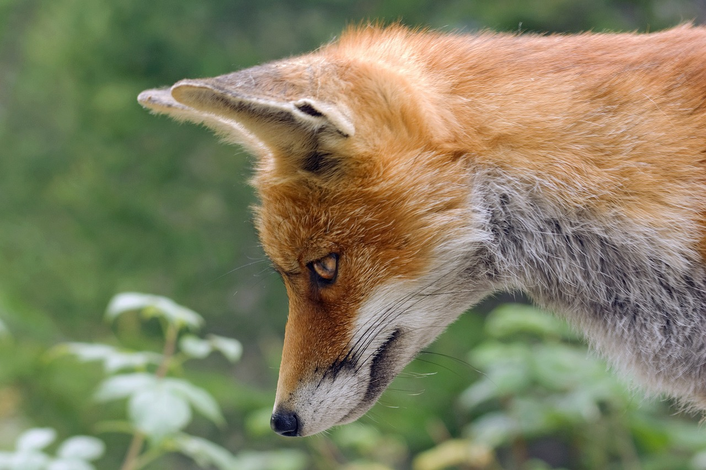

 여우는 개과에 속하는 여러 동물의 총칭이다. 개과의 동물 중 작은 편에 속하는 동물로, 보통의 개보다 작으며, 좁은 주둥이와 털이 많은 귀가 특징이다. 약 37 종의 동물이 여우로 불리며, 그 중에서 여우속(Vulpes)에 속하는 것은 12 종이다. 가장 흔하고 널리 퍼진 종은 붉은여우(Vulpes vulpes)이지만, 다른 종들도 모든 대륙에 널리 분포한다. 여우가 농부를 도와서 행복하게 살았다는 중국 동화가 있을 정도로 친숙한 동물이다. 하지만 대한민국에서 교활한 사람을 비유적으로 '여우 같은 놈'이라고 하는 말이나, 루가의 복음서에서 예수 그리스도가 로마 제국의 헤로데를 비판한 것처럼 약아빠진 사람을 여우에 빗대기도 한다.
 여우는 잡식성 동물이다.[1][2] 여우의 주식은 주로 물고기와 같은 어류와 무척추동물부터 쥐와 같은 설치류, 도마뱀과 같은 파충류, 도롱뇽과 같은 양서류, 닭이나 오리와 같은 가금류, 두더지, 풀, 블루베리, 산딸기, 월귤, 물고기, 메추라기, 거위, 꿩, 비둘기, 가재, 게 등 그 밖의 작은 동물들이다. 많은 종은 여러 종을 먹이로 하는 범식 포식자이지만, 게잡이여우와 같은 몇 종은 한 종만을 주로 먹이로 삼기도 한다. 여우의 대부분 종은 일반적으로 하루에 1kg 정도의 먹이를 섭취한다. 여우는 음식을 지나치게 섭취하면 먹이를 나중에 먹기 위해 나뭇잎, 눈, 흙 아래에 묻는 습관이 있다.